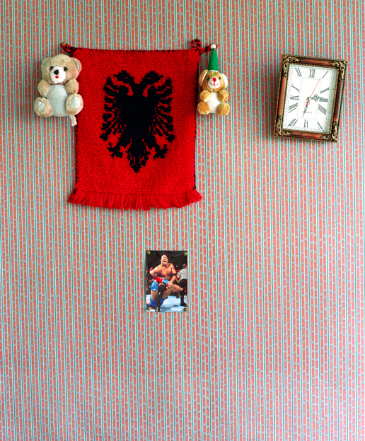

	<div id="oneCol" class="row">
    <div class="large-12  end columns">
        <div class="large-12 end columns">
            <h3>Neither Here nor There 2003</h3>
             <p>These photographs were part of a series taken in the homes of asylum seekers, all of whom had experienced a fraught history. The length of time they could remain in this country was unknown.
			 Rather than take conventional portraits, I chose to focus on the few special objects that they selected to reflect their background and that revealed particular and personal nuances that expressed their individuality.
			They wrote their own words.</p>
			<p>The series was exhibited at AOP London Gallery, Shoreditch. Group Show.</p>
		</div>

		<div class="center">
            <a href="neitherherenorthere-001.html" title="View next Neither Here nor There photograph"></a>

            <span class="links"><a href="neitherherenorthere-001.html">next</a></span>
        </div>
	</div>
</div>

